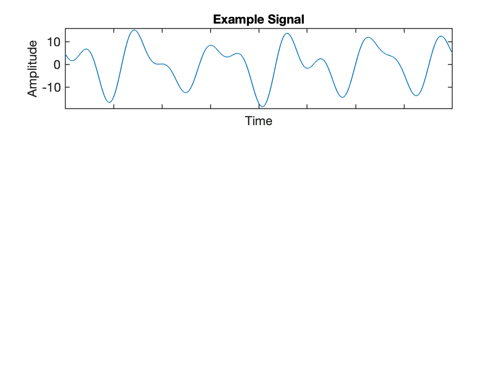
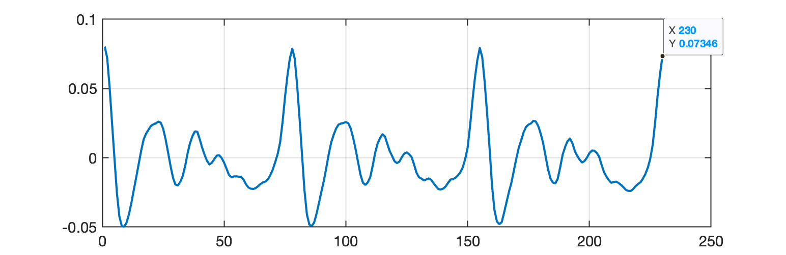
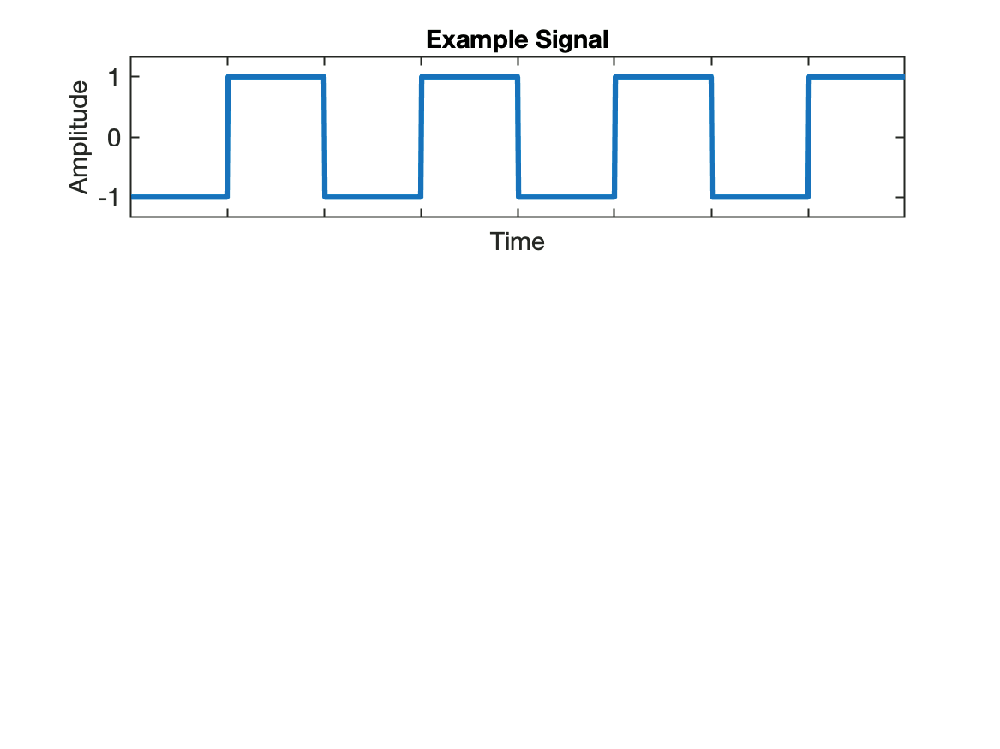
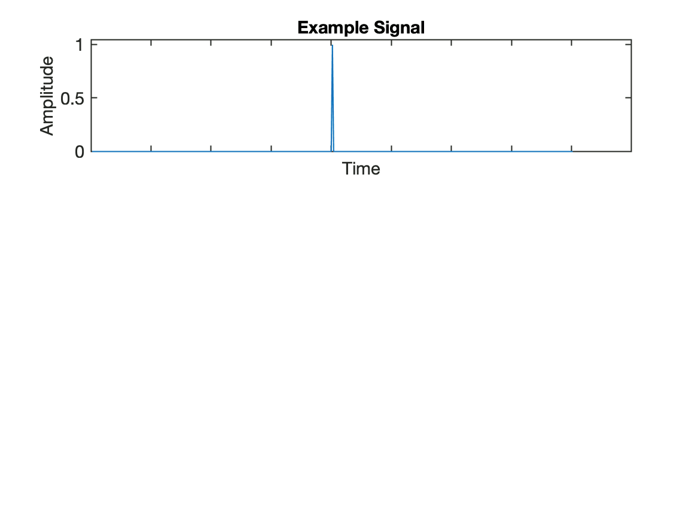

Ref.: David Dorran, Matlab Fourier Demo, March 27, 2014 (acessado em 22/04/2024).
Segue teste da função "fourier_demonstration.m.":
xxxxxxxxxx>> cd('/Users/fernandopassold/Documents/GitHub/fpassold.github.io/Process_Sinais')>> pwdans = '/Users/fernandopassold/Documents/GitHub/fpassold.github.io/Process_Sinais'>> whatMATLAB Code files in the current folder /Users/fernandopassold/Documents/GitHub/fpassold.github.io/Process_Sinaiscreate_filter_spec_plot linear_phase_filters fourier_demonstration superficie grafico_superficie_media_movel linear_phase_filter MAT-files in the current folder /Users/fernandopassold/Documents/GitHub/fpassold.github.io/Process_Sinaismodelo_termico usando_fft_matlab SLX-files in the current folder /Users/fernandopassold/Documents/GitHub/fpassold.github.io/Process_Sinaisamplificador filtro_media_movel_4 exemplo_filtro_media_movel_2 modelo_termico filtro_media_movel_2 modelo_termico_empty >> dir *.wavbass_note.wav drum_seg.wav drum_seg_output.wav >>Resultado para: >> fourier_demonstration(1): sinal bem definido...

Saída para: >> fourier_demonstration(2): segmento de voz humana...

xxxxxxxxxx>> fourier_demonstration(2)Error using horzcatDimensions of arrays being concatenated are not consistent.Error in fourier_demonstration (line 72)ylim_max = max([ sorted_mags(1)/N*2 sig])*1.05; >> help horzcat horzcat Horizontal concatenation. [A B] is the horizontal concatenation of matrices A and B. A and B must have the same number of rows. [A,B] is the same thing. Any number of matrices can be concatenated within one pair of brackets. Horizontal and vertical concatenation can be combined together as in [1 2;3 4]. Obs.: como é uma função, não restam variáveis para depurar (todas são "voláteis").
Saída para: >> fourier_demonstration(3): onda quadrada...

Saída para: >> fourier_demonstration(3): um impulso...

Código: fourier_demonstration.m.
xxxxxxxxxx% illustration of Fourier Theory using plots%% usage : fourier_demonstration(1) % a well defined signal% fourier_demonstration(2) % a segment of speech signal % (download from https://www.dropbox.com/s/bw4dpf93xxz1lyb/speech_seg.wav)% fourier_demonstration(3) % a SQUARE WAVE% fourier_demonstration(4) % an impulsefunction fourier_demonstration(num)if(num==1) %sum of sinusoids as input t = 0:1/16000:1-1/16000; s1 = cos(2*pi*1*t);%cosw(16000,1, 16000, 0); s2 = cos(2*pi*5*t)*5;%cosw(16000,5, 16000, 0)*5; s3 = cos(2*pi*10*t + pi/2+0.56)*3;%cosw(16000,10, 16000, pi/2+0.56)*3; s4 = cos(2*pi*8*t+pi)*3;%cosw(16000,8, 16000, pi)*3; s5 = cos(2*pi*12*t+pi/2.2)*3;%cosw(16000,12, 16000, pi/2.2)*3; s6 = cos(2*pi*3*t+pi/2+0.4);%cosw(16000,3, 16000, pi/2+0.4)*3; sig = s1+s2+s3+s2+s3+s4;elseif(num==2) sig = wavread('speech_seg.wav')'; elseif(num==3) sig = [zeros(1,100) ones(1,100) zeros(1,100) ones(1,100) zeros(1,100) ones(1,100) zeros(1,100) ones(1,100) ]; sig = (sig-0.5)*2; else sig = [zeros(1, 200) 1 zeros(1,200)]; endsig = sig - mean(sig); N = length(sig);ft = fft(sig);ft(round(length(ft)/2)-2:end) = [];mags = abs(ft);phases = angle(ft);dc_mag = mags(1);mags(1) = [];phases(1) = []; [sorted_mags sorted_indices] = sort(mags,2);% sort in decending ordersorted_mags = fliplr(sorted_mags);sorted_indices = fliplr(sorted_indices);sorted_phases = phases(sorted_indices); synth_op = zeros(1, N);sig = sig -dc_mag;n = [0:N-1]; % sample numbers ylim_max = max([ sorted_mags(1)/N*2 sig])*1.05;ylim_min = min([ -sorted_mags(1)/N*2 sig])*1.05;ylims = [ylim_min ylim_max ]; subplot(3,1,1) plot(sig) set(gca,'Xticklabel','', 'YLim', ylims) set(gca,'Xticklabel','') ylabel('Amplitude') xlabel('Time') title('Example Signal');pausecolors = 'rgkbm';significant_freqs = find(sorted_mags > max(sorted_mags/100));freq_vals_to_display = max(sorted_indices(1:length(significant_freqs))) +1 ;length(mags)for k = 1: length(mags) omega = 2*pi*(sorted_indices(k))/N; sinusoid = cos(n*omega+sorted_phases(k))*sorted_mags(k)/N*2 ; if(sorted_mags(k) < 10^-6) break end synth_op = synth_op + sinusoid; subplot(3,1,1) plot(sig) set(gca,'Xticklabel','', 'YLim', ylims) hold on plot(synth_op,'r') set(gca,'Xticklabel','') ylabel('Amplitude') xlabel('Time') if k ==1 title('Example signal and sinusoid shown in lower plot'); else title(['Example signal and ' num2str(k) ' sinusoids shown in middle plot added together.']); end hold off subplot(3,1,2) hold on plot(sinusoid,colors(rem(k,5)+1)) set(gca,'Xticklabel','') %set(gca, 'Ylim', [-max(mags)/N*2 max(mags)/N*2]) set(gca, 'Ylim', ylims) ylabel('Amplitude') xlabel('Time') subplot(3,1,3); ft_mag_vals = ones(1, freq_vals_to_display)*NaN; sorted_indices(k) if( sorted_indices(k) < freq_vals_to_display) ft_mag_vals(sorted_indices(k)) = sorted_mags(k)/N*2; end hold on %stem([0:freq_vals_to_display],[NaN ft_mag_vals],'^') hold off ylabel('Magnitude') xlabel('Normalised Frequency (1/(periods displayed))') pause %plot(sinusoid,colors(rem(k,6)+1))endclose allFim.
Fernando Passold, em 22/04/2024